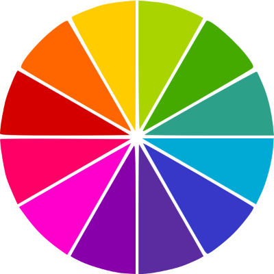

Psicologia das Cores.
Cores são muito importantes para a harmonia do site, não somente pelo fato de embelezar o site, mas pelo fato de que as cores influenciam nas nossas emoções subconscientemente. Como por exemplo o azul, ele é associado a competencia, sabedoria, calma, logo ele é muito associado a marcas de tecnologia muito famosas, como a Meta (antiga facebook), Dell, Intel, entre outras.
As cores tanto influenciam no nosso cerebro, que não devemos usar cores brancas em nossos textos, pois estas causam cansaço visual.
Exemplos de Associação de cores:

Como representar as cores.
Podemos reresentar as cores por nome, código hexadecimal, código RGB ou representação HSL.
Por nome: blue, red, gree, yellow;
Por código Hexadecimal: #0000FF, #FFFFFF;
Por código RGB: RGB(0,0,255), RGB(255,255,255);
Representação HSL: HSL(240,100%,50%), HSL(0,0%,100%)
Harmonização de cores.
Para entendermos um pouco melhor sobre harmonia de cores, precisamos de um circulo cromatico, onde simplificamos em 12 cores principais, que são divididas em 3 grupos.
Cores primarias, cores secundarias e cores terciarias.
Cores primárias: Amarelo, vermelho e azul. São cores simétricas, no círculo cromático formam um triângulo equilatero.
Cores Secundárias: Laranja, violeta e verde.
Cores terciárias: amarelo-esverdeado, amarelo-alaranjado, vermelho-alaranjado, vermelho-arroxeado, azul-arroxeado, azul-esverdeado. Cores terciárias tem tons mais pastéis.
Temperatura das cores.
Cores quente e cores frias, são cores análogas e possuem harmonia entre si:

Paleta de Cores para site.
Recomenda-se usar de 3 a 5 cores, desconsiderando branco e preto, pois estas sempre vão ter.
Caso o cliente já tenha uma logo, pegar a cor principal desta como a principal do site também.
Cores complementares.
Cores complementares tem mais contraste entre si. Sempre vai ser a cor oposta à escolhida, a que irá ter mais contraste, isto para qualquer cor. Logicamente, isto não significa que será cores que combinam, mas que se contrastam entre si.
Cores Análogas.
São cores que não tem contraste entre si, mas que possuem bastante harmonia. Estas sempre são cores vizinhas as que você escolheu.
Core Análogas Relacionadas.
Você pega duas cores vizinhas, pula uma cor e pega a próxima, logo são cores que tem harmonia e um contraste não muito gritante.
Cores Intercaladas.
Parecidas com o tipo anterior, mas com um contraste maior. Você escolhe uma cor, pula a cor sequente e seleciona a próxima, criando uma paleta de cores um pouco mais dura.
Cores Triádicas.
Quando você intercala 3 cores, ou seja, seleciona uma cor e pula 3.
Cores em Quadrado.
Você intercala de duas em duas cores, até criar um quadrado no círculo cromático.
Cores Tetrádicas.
Você seleciona duas cores principais e pega suas cores complementares, assim tendo 4 cores e formando um retângulo no círculo cromático.
Monocromia
Trabalha com uma só cor, e varia ela com a saturação ou o brilho, criando o degradê.
Paleta de cores na Web.
Ferramentas para construir uma paleta de cores:
Como capturar cores de tela.
Tirar print da tela, abrir o Gimp, dar crtl+v, usar o conta gotas para pegar o código da cor.
ou
Baixar a extensão do Google Chrome Colorzilla, usar esta extensão para pegar o código hexadecimal diretamente do site.